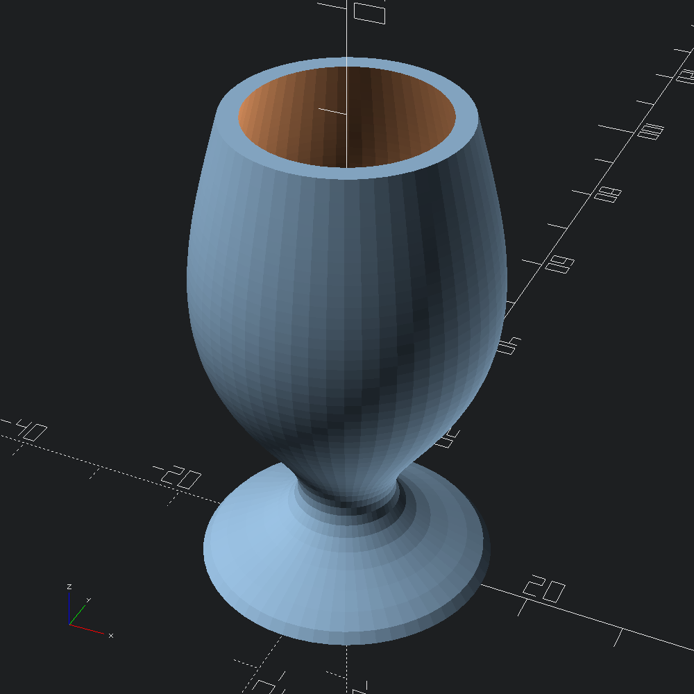

open OCADml
open OSCADmlA function from z (angle a is ignored) to radius that we will use to define both the outer boundary of the chalice, as well as the cup volume to difference out of it. Since we are ignoring a, the radius will be consistent all the way around the z-axis for each height z.
let f ~z ~a:_ = Float.(5. *. (cos (log ((z /. 5.) +. 1.) *. pi) +. 2.))Form the outer and inner (to be subtracted from outer) meshes by evaluating f between the given z bounds. We'd like inner to be narrower that outer such that it fits inside, so we subract from the radius returned from f uniformly.
let outer = Mesh.axial_plot ~min_z:0. ~z_steps:50 ~max_z:50. f
let inner = Mesh.axial_plot ~min_z:2. ~z_steps:50 ~max_z:51. (fun ~z ~a -> f ~z ~a -. 2.)Convert the outer and inner meshes to Scad.ts, and difference them before outputing to file.
let () =
Scad.to_file "axial_chalice.scad" @@ Scad.(difference (of_mesh outer) [ of_mesh inner ])